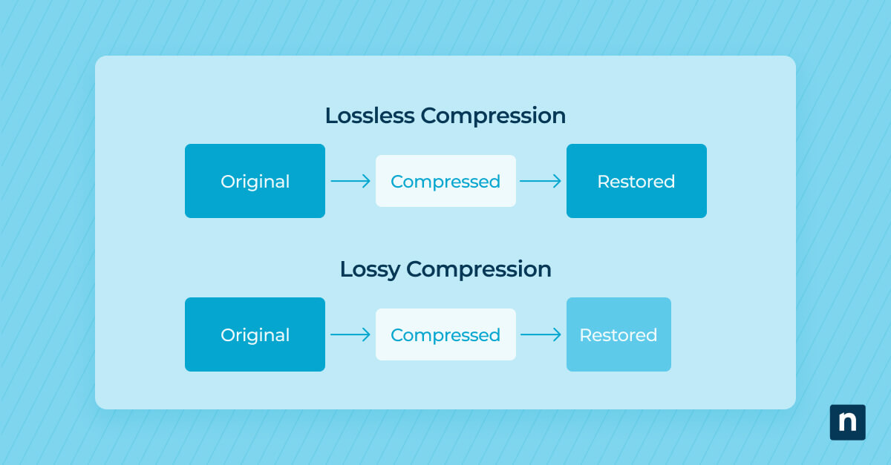

Compressie
Als je een afbeelding of muziek gaat opslaan, wil je dat deze zo min mogelijk data kost.
Zo kan je zo veel mogelijk verschillende bestanden opslaan. Hier zijn verschillende
technieken voor.
Wat zijn bitmap- en vectorafbeeldingen?
Bitmapafbeeldingen
Een afbeelding op een computer bestaat uit heel veel pixels. Hoe meer pixels een afbeelding
heeft, hoe scherper die is. Zo'n afbeelding die is opgebouwd uit pixels heet een bitmapafbeelding.
Een bitmapafbeelding kost veel opslagruimte, waardoor de afbeelding wel 5MB groot kan zijn.
Als je gaat inzoomen op een bitmapafbeelding, zie je uiteindelijk allemaal losse pixels en is
de afbeelding niet scherp meer.
Vectorafbeeldingen
Als je een afbeelding moet maken voor een heel groot scherm, zoals een reclamebord,
moet de afbeelding heel veel pixels hebben om scherp te blijven. Hierdoor neemt een afbeelding
heel veel ruimte in op je computer. Dit is niet handig en daarom kan je ook op een andere manier
een afbeelding op je computer zetten. Met een vectorafbeelding sla je de vormen waaruit de
afbeelding bestaat op, in plaats van de waarden van de pixels. Hierdoor neemt een vectorafbeelding
een stuk minder ruimte in op je computer. Bij een vectorafbeelding sla je gegevens als de vorm,
de locatie, de grootte en de kleur op. Wijzigingen zijn bij vectorafbeeldingen makkelijker aan te
brengen dan bij bitmapafbeeldingen, maar een nadeel is dat het bij vectorafbeeldingen alleen
mogelijk is om vormen vast te leggen. Hierdoor kan je een digitale foto niet als vectorafbeelding
opslaan, want die bestaat uit heel veel verschillende kleurtinten.

Hoe worden geluidsfragmenten opgeslagen?
Geluid is net als tekst, kleuren en afbeeldingen een vorm van informatie die je kan opslaan
op je computer. Hoe zet je jouw favoriete muzieknummer om naar een patroon van nullen en enen?
Een microfoon neemt geluid op, in de vorm van een trilling in de lucht, en zet dit om naar een
elektrisch signaal. Een computer zet dit elektrische signaal weer om naar digitale waarden.
Dit proces noem je samplen.
Tijdens dit proces wordt er elke keer op een vast moment gemeten wat de sterkte van het geluid is.
Hoe vaker je meet, hoe nauwkeuriger het resultaat is. Het aantal samples wordt de sample rate
genoemd. De meeste muziek wordt opgenomen met een sample rate van 44.100 Hz, dit betekent
dat er 44.100 keer per seconde een meting wordt gedaan. Zo krijg je een nauwkeurig resultaat.
Als je dit geluid na het samplen afspeelt, worden de gemeten waarden omgezet naar een elektrisch
signaal. Zo weet de computer hoe jouw favoriete nummer klinkt.
Wat is compressie bij bestanden?
Afbeeldingen en geluidsbestanden bevatten heel veel details. Dit is fijn, want dan is de
kwaliteit hoog, maar het zorgt er wel voor dat de opslag van je apparaat snel vol raakt.
Hier is een oplossing voor, namelijk bestandscompressie. Hierdoor wordt de bestandsgrootte
verkleind. Er zijn twee soorten bestandscompressie.
Lossy compression
Hierbij wordt de informatie uit het originele bestand aangepast en daarna verwijderd.
Dit zorgt ervoor dat de bestandsgrootte kleiner wordt.
Dit werkt zo: als een afbeelding van een roos uit 100 rode tinten bestaat die allemaal op elkaar
lijken, kan je deze verschillen met het menselijk oog bijna niet zien. Door minder rode tinten
te laten zien, neemt de afbeelding minder ruimte in. De kwaliteit van de afbeelding neemt wel af.
Een veelgebruikte lossy compression-methode is JPEG, afgekort JPG. Foto's die je met je telefoon
maakt, worden opgeslagen als .jpg bestand.
Lossless compression
Bij lossless compression wordt er niets veranderd aan de originele kwaliteit.
Hierdoor wordt er geen informatie verwijderd. In plaats daarvan wordt de informatie op een
andere manier opgeslagen. Als er in een afbeelding een aantal pixels dezelfde waarde hebben,
wordt dit in plaats van (18, 18, 18, 18) opgeslagen als (4,18).
Het voordeel van lossless compression is dat het bestand altijd weer kan worden teruggezet naar het
origineel. Dit kan bij lossy compression niet, want dan is de informatie aangepast of verwijderd.
Het nadeel van lossless compression is dat bestanden groter blijven dan bij lossy compression.
Dit komt doordat er geen informatie wordt verwijderd, op wat aanvullende gegevens zoals informatie
over het apparaat waarmee de foto is gemaakt na.
Wat is compressie bij geluidsfragmenten?
Geluidsfragmenten nemen veel ruimte in als ze niet gecomprimeerd zijn. Zo neemt een uur aan
muziek in cd-kwaliteit 700 MB in.
De bekendste compressietechniek voor geluid is MP3. Dit is een lossy compression-methode, dus er
wordt informatie verwijderd bij het comprimeren. Gelukkig horen wij dit (bijna) niet.
Het is belangrijk met hoeveel bits de sample rate wordt opgeslagen. Als je de sample rate
vermenigvuldigt met het aantal bits, krijg je de bitrate van de muziek. Dit wordt uitgedrukt
in kilobits per seconde (kbps).
Als de bitrate wordt teruggebracht tot 256 kbps, is er bijna geen verschil te horen vergeleken
met het origineel. Als het tot 128 kbps wordt teruggebracht, kan je wel wat vervorming in de
klanken horen.
Door deze compressietechniek wordt het mogelijk om veel muziek op te slaan, zonder dat de opslag
van je computer snel vol raakt.
